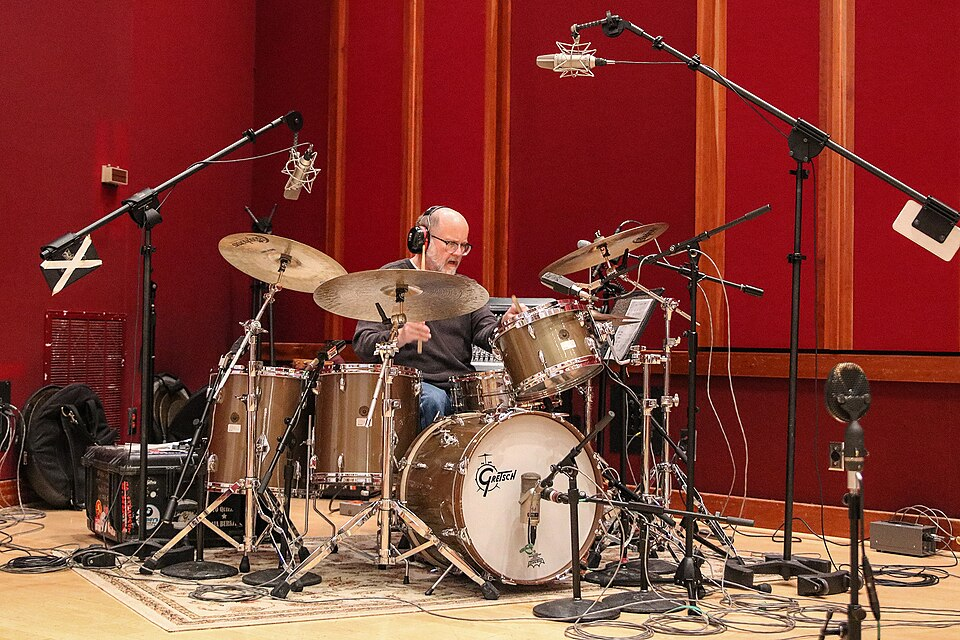
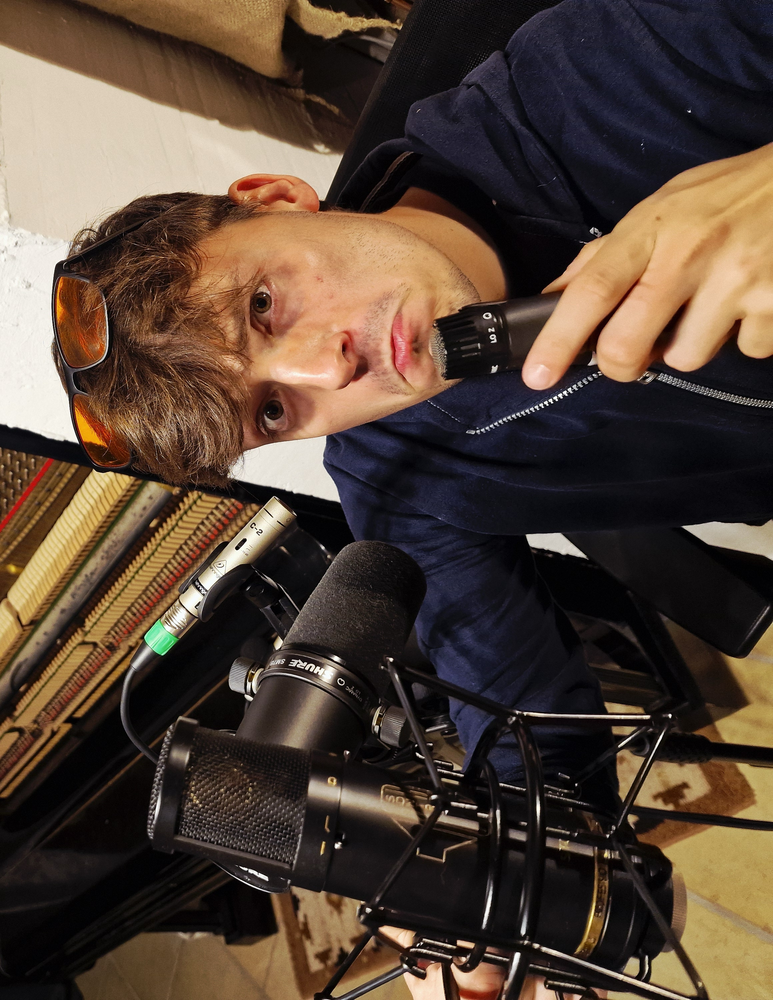

Tecniche di Registrazione della Batteria
Spesso, chi ascolta un brano finito non si accorge della profonda e affascinante complessità che si nasconde dietro a quei pochi minuti di magia.

Cercherò di presentare al meglio una delle tecniche di registrazione della batteria più note del settore, concentrandomi in questa analisi su un unico approccio: la tecnica Recorderman.
Iniziamo subito con un esempio pratico, parlando dello strumento che rende la fase di registrazione così complessa: LA BATTERIA ACUSTICA. Questa, in verità, non è un singolo elemento, ma un vero e proprio insieme di strumenti che, suonati in perfetta sintonia, dettano il ritmo della canzone creando il cosiddetto GROOVE (quella forza invisibile che, quasi per magia, ci fa muovere il piede a tempo di musica).

Entrando nel vivo della registrazione, la prima vera sfida è il posizionamento. Con la batteria, il nemico numero uno ha un nome preciso: la fase. Per ottenere un suono largo, aperto e "a fuoco", la precisione geometrica è tutto.
Come si nota dalla foto, l'ingegnere audio sta prendendo le misure: la distanza tra il rullante — il tamburo principale e cuore del groove — e il primo microfono panoramico deve essere millimetricamente identica a quella del secondo panoramico (situato sopra la spalla sinistra, secondo la famosa tecnica del Recorderman). Solo così si ottiene un'immagine stereo perfetta (un microfono per il lato sinistro, uno per il destro) senza fastidiose cancellazioni di frequenza.
Quale microfono utilizzare?

Un problema non da poco è la scelta dei microfoni adatti. Se passiamo da un approccio minimalista a un setup moderno (il cosiddetto close-miking), notiamo che ogni tamburo ha un suo microfono dedicato. Questo garantisce all'ingegnere del suono e al produttore un controllo totale e una vasta gamma di opzioni in fase di mixaggio.
Principalmente, si tende a utilizzare microfoni a condensatore o microfoni a nastro per la ripresa panoramica (ideali per catturare il dettaglio dei piatti e l'ambiente) e microfoni dinamici posizionati vicino alle pelli dei tamburi (perfetti per gestire l'alta pressione sonora dei colpi). Ovviamente, la scelta finale dipende sempre dal genere musicale.